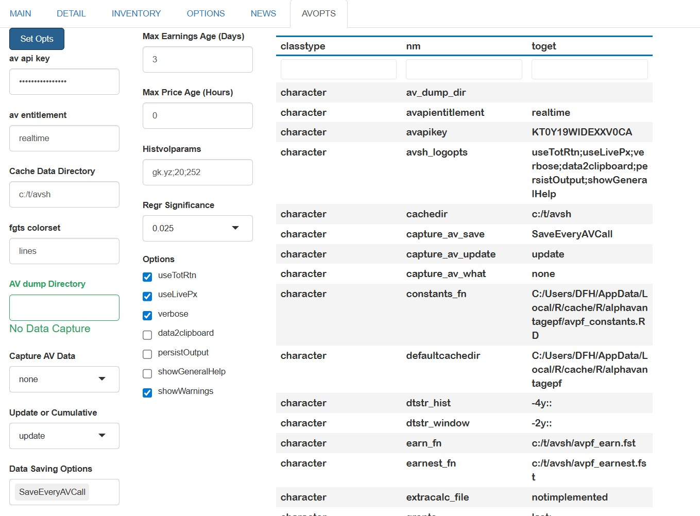
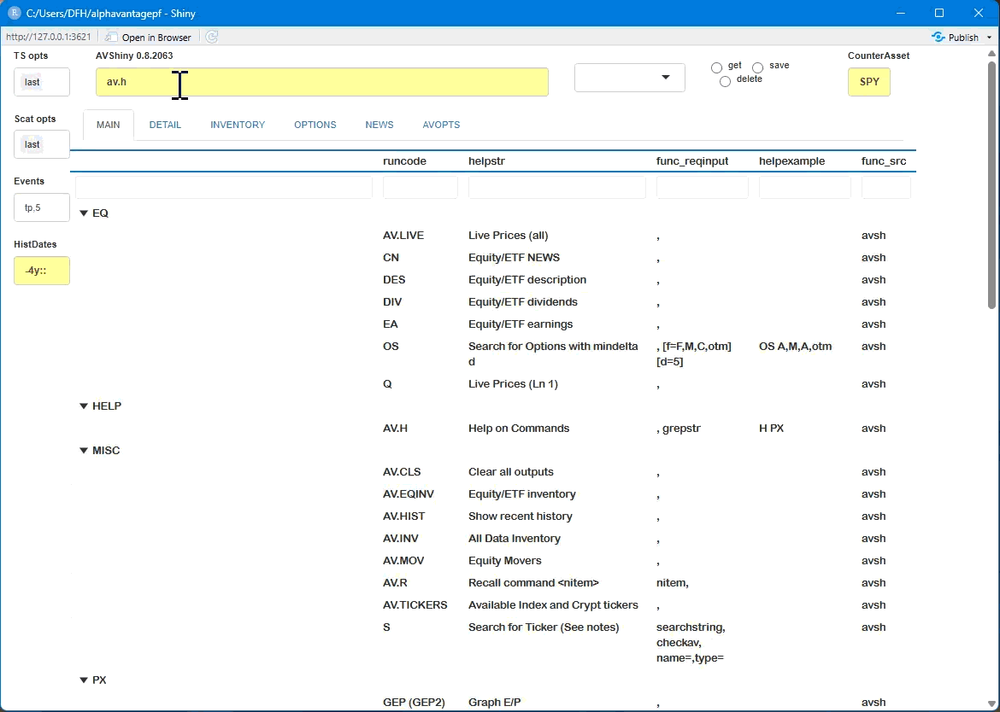
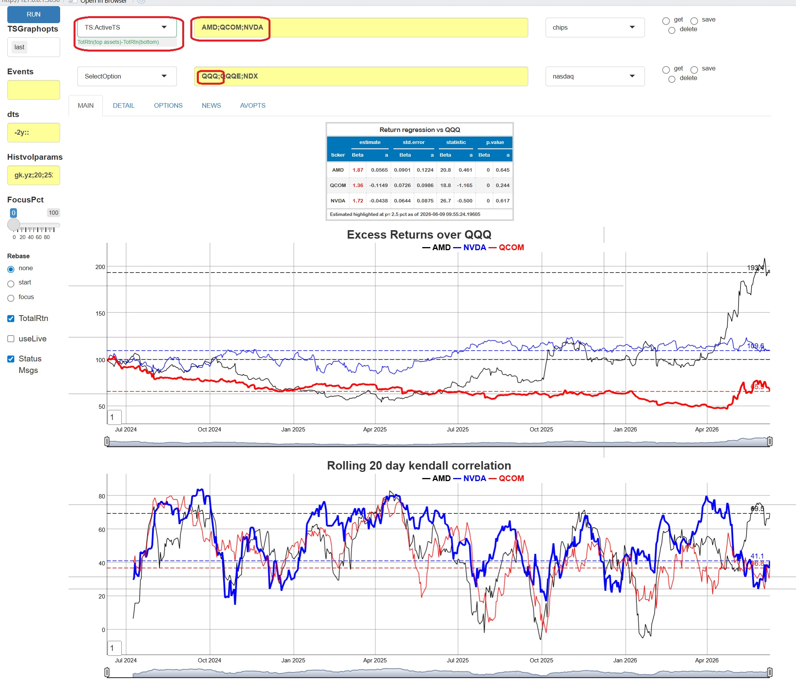
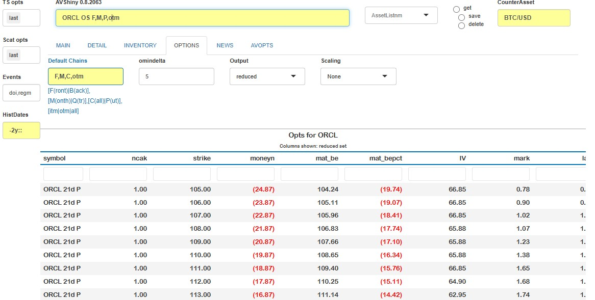
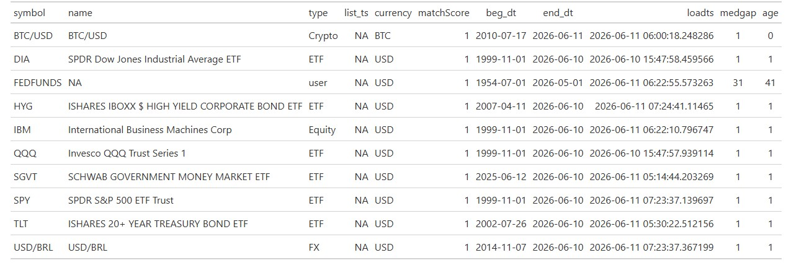
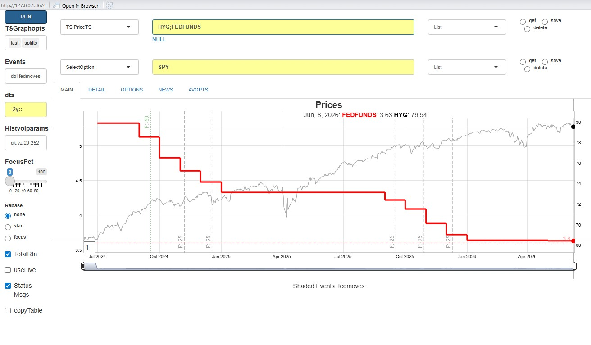

The Alphavantagepf package also contains a Shiny Application which can be used to query, save, and visualize basic market information without having to navigate the asset-specific functions provided by the Alphavantage API. The app provides an intuitive way to compare small baskets of assets both technically and fundamentally.
This vignette will first go through some overall design goals and conventions before providing an overview of how to start and configure the application then give a brief overview of list management and individual analysis components. Augmenting the data is also describes. Future plans are discussed in an appendix.
Overall design goals and conventions
The app is designed to
- Integrate four of the main asset classes into the analysis. For example, an equity, an index and FX exchange rate can all be plotted together.
- Minimize the amount of price information downloaded by caching (to the degree possible) older price data.
- Provide interfaces for capturing any data requested and adding external data to the internal cache.
- Provide easy ways to create and retrieve baskets of assets.
- Use modern design elements as much as possible, in particular the gt package and the dygraphs package. The latter is used via a “sister” package FinanceGraphs
A few conventions which are helpful to know before using the app are
| Item | Convention | Example |
|---|---|---|
| Asset Sets | Semicolon ; delimited |
"IBM;NDX;USD/MXN" |
| Relative Dates | (Signed) integers followed by [m|d|y],
relative to today |
"-4m" |
| Date Ranges | Relative dates separated by "::"
|
"-4m::", "-1y::+1y"
|
App invocation and initial setup.
The app requires a very modest amount of setup before using. It can be run with
When the app is first run, the following screen will be shown, with
the AVOPTS tab
selected. The first order of business will be to set the Alphavantage
API keys. To do so, just type or copy in both your API key and your
entitlement status (Either delayed or
realtime), and hit the blue Set Opts
button.

Other optional items that can be set are
| Item | Description |
|---|---|
| Cache Data Directory | Directory to store cached price data. If not specified, a temporary directory will be created and used. |
| Cached data is in a price file (in fst format), and an inventory file | |
| fgts colorset | A named aesthetic set for time series line colors, See fg_update_aes() |
| Regr Significance | p-values below which regression terms will be highlighted |
| AV dump directory | A directory in which to create a file with each downloaded function call. See below for details. |
| Capture AV Data | What Alphavantage calls to capture (e.g. Prices, non-prices, or all data) |
| Update or Cumulative | If Update, then captured data will be
keyed and updated only if new, otherwise all data captured |
For example, Update will only store the
latest price for a particular symbol and date |
|
| Data Saving Options | Control how often the captured data file is cleared or saved |
When capturing is turned on a file called av_download.RD
will be created and updated in the specified dump directory. This file
will be a named list of data.tables, with a data.table containing all
downloaded data corresponding to an Alphavantage function
(e.g. TIME_SERIES_DAILY). If “cumulative” is selected, all
data will time-stamped and added to the relevant data.table. If not,
then data will be replaced for each relevant key (usually
SYMBOL). The user can then use that file to integrate
search histories into other analytics, such as a rolling Markdown
file.
Asset List management
Securities are seldom analyzed in isolation. It is easy to create and use ad-hoc groups of securities in this app.
To create a list, First, type in a new name for the list in the list box as shown below, and Hit Enter. Second, type in the components (separated by semi-colons) and hit the set button.
To get the assets in a list, select the desired list from the dropdown and hit get button.

You can see a table of current asset lists by running the “Gen:Inventory” command, and can add asset lists outside of the app using av_add_assetgroups()
Running Basic Analyses
To run analyses, select the desired item from the dropdowns and press the blue RUN button. One of more graphs or tables will be shown in the MAIN tab, with additional data possible in the DETAIL tab.
Graph events and decorations can be specified in the first two boxes,
with annotations for the last level and 5 turning points used as
defaults. The options possible are detailed in the fgts_dygraph()
documentation. Empty out the boxes for clean graphs. The date ranges
plotted come from the “dts” box (see above for conventions), and more
recent data can be focused in on using the FocusPct slider. For example, if the slider is
set to 50pct, and the date string is "-2y::" then the graph
will only show the last year of data, but can be slid back to see the
entire 2 year period.
Note that status messages are sent to the console if the “Status Msgs” box is checked and output data for each analysis is copied to the clipboad if the “copyTable” box is checked.
Plotting options
Data is plotted in raw form unless the Rebase options are used. Rebasing at the start will normalize all series to 100 at the start of the window. (In the the example above, the rebase would occur at the first point plotted 2 years prior to today). If Rebasing is set to the focus point, the rebasing occurs at that point set by the slider.
An alternative to rebasing is to plot the first asset on its own
axis, which can be done by selecting "splitts" in the
"TSGraphOpts" box. Other options that can be selected in
that box are
- Highlighting the first series with a thicker line
- Adding Labels showing the last value or series title
- Adding hi-low shading, if the data is available.
- Changing the line colors (via the
"fgts colorset"setting in the AVOPTS tab.)
Event codes can also be specified in the "events" box.
See fg_get_dates_of_interest()
and Dygraphs
vignette These can be single day events or highlighted ranges of
dates. (An example is below.)
Time series graphs are harder to interpret when muitple time series
frequencies or missing data is plotted together.
When time series do not appear to be daily, they will be plotted with
step functions. When data is missing (as would be the case when plotting
equities with assets such as FX or Crypto that trade over weekends),
gaps in the time series will be evident.
Analyses that can be run
The table below shows the current analyses that can be run. Select what you wish and hit the RUN button.
| Analysis | Explanation/Notes |
|---|---|
| Gen:Inventory | Price inventory and Asset Lists |
| Gen:LivePx | Live Price Table |
| Gen:NameSearch | Search for an Equity or Index [1] |
| TS:PriceTS | Time Series of Prices [2],[3] |
| TS:ActiveTS | Time Series of Total Return of Line 1 Assets less Line 2 [4] |
| TS:HistVolTS | Time series of Rolling volatilities and correlations [5] |
| EQ:DES | Table of descriptive data for Line 1 Assets |
| EQ:News | Table of recent news items for Line 1 Assets [6] |
| EQ:DivEarn | Table of Dividends and Earnings for Line 1 Assets |
| EQ:OptSearch | Option Lookup and Search [7] (See Section Below) |
| Gen:Movers | US Market Movers |
Notes
1 Due to Alphavantage limitations, the search returns tickers that begin with the search term.
Graphing options are described above. THe graph can interactively be zoomed in on and reset with a double click.
Two synchronized graphs can be used by selecting this option for both Line 1 and Line 2.Total return data is used unless the box is unchecked. The data is augmented by live data if the box is checked.
Graphs show active returns, i.e. Total return of each asset in Line 1 less the first asset (typically a benchmark index) in Line 2. Rolling correlations and full period betas are also shown.
Volatilitity parameters in the Histvolparams box are passed to the [TTR::volatility()] function.
Results will be displayed in the OPTIONS tab.
Results will be displayed in the NEWS tab.
As an example, suppose we wish to look at active returns of three
popular chip manufacturers against the Nasdaq 100 broad index. Put the
tickers of interest in Line 1, and an index in Line 2. (If there are
more than one tickers in Line 2, only the first is used.) Select
TS:ActiveTS and hit run. The app will get whatever data it
needs, typically from the cache, but augmented with most recent (live)
data and produce the following output:

Here is another example which highlights both the comprehensive abilities to combine assets in the app with graphing abilities. Suppose we wish to plot the fair value history of the crypto ETFIBIT, and add
some visual indication of overall market direction. Using the
TS:ActiveTS analysis with IBIT on line 1,
BTC/USD on line 2, and doi:regm in Events, we
would see

Option Search
To find options for a given set of tickers, Run “EQ:Optsearch” which will take you to the OPTIONS tab. A few fields on that page which will help narrow down the options are:
| Field | Detail |
|---|---|
| Chains | Comma delimited string of four items to narrow downloaded options. |
1. [F|B] first contract or second
contract |
|
2. [M|Q] Monthly expiration or Quarterly
expiration |
|
3. [C|P|A] Calls, Puts or Both |
|
4. [itm|otm|all] In or out of the
money |
|
| Mindelta | Minimum absolute delta of option |
| Output | Subset of columns to show, relevant to Trading or Valuation |
| Scaling | Values and Greeks for 10 contracts or 10kUSD premium |
The app looks up the current spot to determine moneyness. A skew graph is plotted after the table.

Managing data outside of the app.
The Shiny App also has facilities for adding and retrieving time
series data externally using other R scripts or documents. All of the
downloaded price history, as well as an inventory of prices are stored
either in a temporary directory created when the app is first run, or a
directory specified in the "AVOPTS" tab. The price data is
stored in fst format, which
has been the performance winner for several years. Time series data
stored in that cache augments that returned by (e.g.)
av_get_pf("IBM","TIME_SERIES_DAILY") function wih split and
dividend data returned by other av_get_pf()
calls. The full set is shown below. Note that a timestamp for each data
retrieval is also kept.
symbol timestamp open high low close adjusted_close dividend_amount split_coefficient ts origclose
<char> <IDat> <num> <num> <num> <num> <num> <num> <num> <POSc> <num>
ABBNY 2001-04-06 7.37 7.37 7.27 7.29 7.29 0 0.433 2026-05-31 08:06:48 16.8
ABBNY 2001-04-09 7.32 7.50 7.32 7.50 7.50 0 0.433 2026-05-31 08:06:48 17.3Adding data and integrating different asset classes.
The data can also be added to externally using the [av_add_data()] function. Any time series can be added, but not all time series can be guaranteed to be updated by Alphavantage calls. One difficulty with Alphavantages’ API platform is that there are different function calls (and returned data sets) for each major asset class. This app integrates them into one price table, but at the expense of having to know each asset type for the data added.
The app tries to determine what asset class a symbol is to update it
using av_get_pf()
calls as best as it can. Specifically, each new ticker is checked
against current Index lists, cryptocurrency lists, and then with
Alphavantage’s "SYMBOL_SEARCH". If several tickers
are passed at once, this can be quite expensive, as
Alphavantage tends to limit data usage if too many calls are made in
succession. If possible, it’s much better to predetermine the asset type
(one of c("Equity","ETF","Index","FX","Crypto")) in advance
and pass it to [av_add_data()] call at runtime.
Data which is completely exogenous to Alphavantage can also be added
to the app’s cached data set. If the asset type isn’t specified or
cannot be determined, it’s assumed to be a "user" asset
type which isn’t updated, but can still be plotted or used. As an
example, suppose we wish to plot the prices of a common credit ETF
against FRED’s FEDFUNDS data. We will download both and add them
programmatically. Generic data needs to be manipulated into the form the
app expects, but data downloaded from Alphavantage is already in that
form.
# av_add_data can be used simply, but
av_add_data(av_get_pf("IBM","TIME_SERIES_DAILY_ADJUSTED"))
# For many assets, use this
asset_df <- data.frame(symbol=c("HYG"),type=c("ETF"),currency=c("USD"), name=c("HY ETF"))
av_add_data(av_get_pf("HYG","TIME_SERIES_DAILY_ADJUSTED"), assettypes=asset_df)
# External Data
suppressMessages(require(quantmod))
ffdta <- as.data.table(quantmod::getSymbols("FEDFUNDS",src="FRED",auto.assign=FALSE))
ffdta <- ffdta[,.(DT_ENTRY=index,close=FEDFUNDS,adjusted_close=FEDFUNDS,symbol="FEDFUNDS")]
av_add_data(ffdta)
dump_inv() |> gt()
The data added can be plotted using the"TS:PriceTS" analytic,
as seen below. Note that the monthly time series needs to be used with
care, since it doesn’t correspond to the actual Fed Meetings.

Future plans
Planned improvements currently include
- Earnings and dividends incorporated into plots
- Ability to plug in user-defined functions which have access to the internal data store.
- Correlation and hedging analyses.
- Interface to events and aesthetics sets relevant to FinanceGraphs